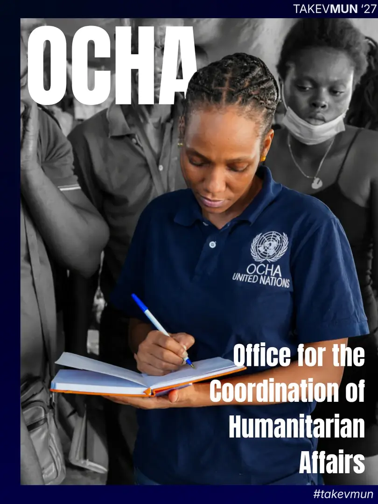
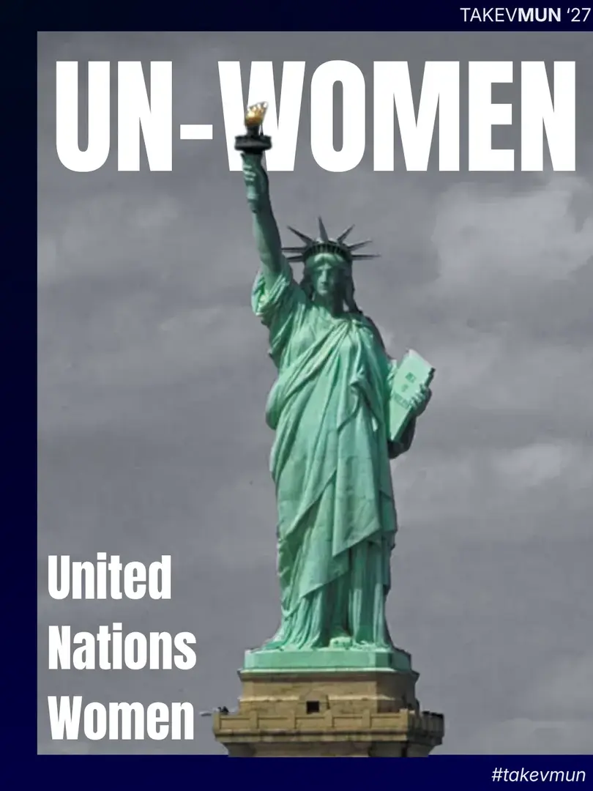
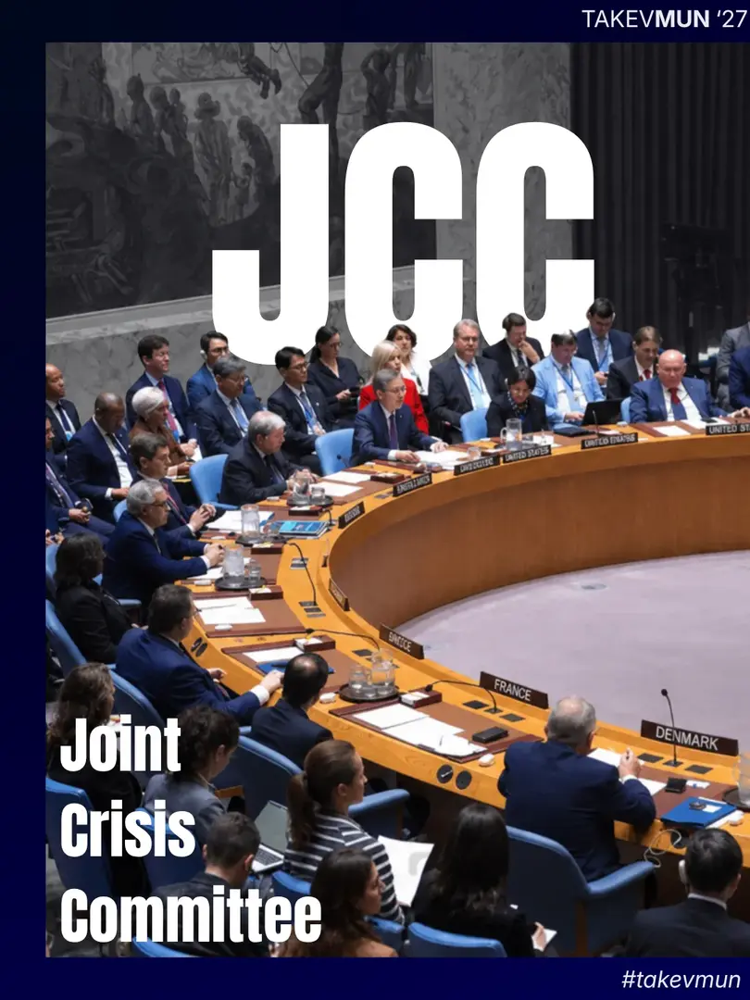
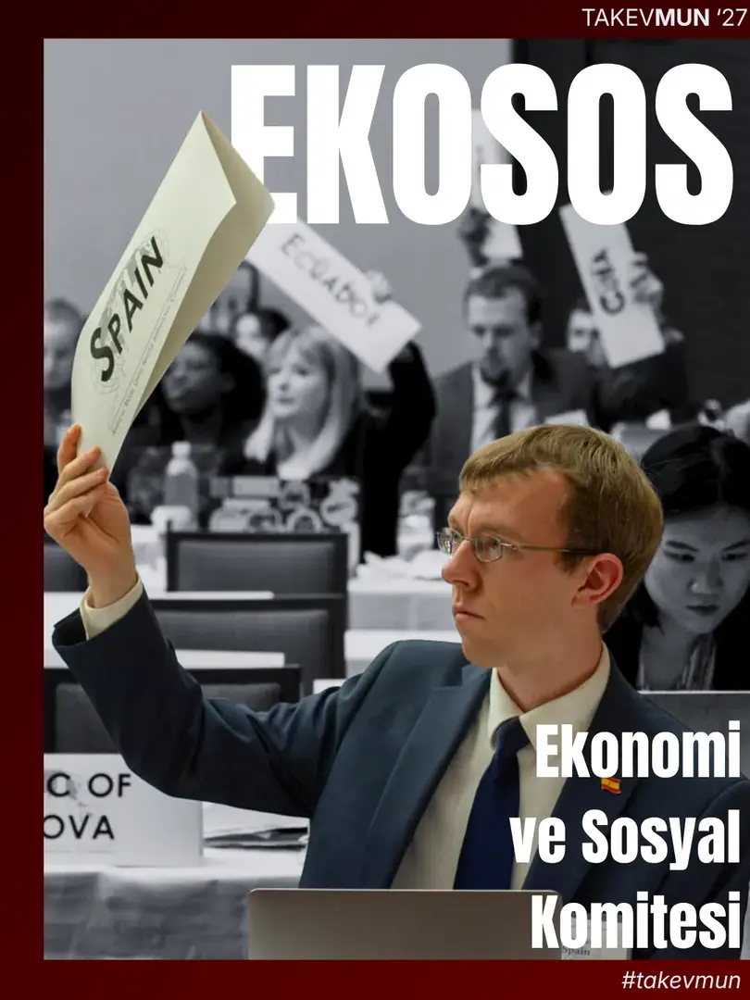
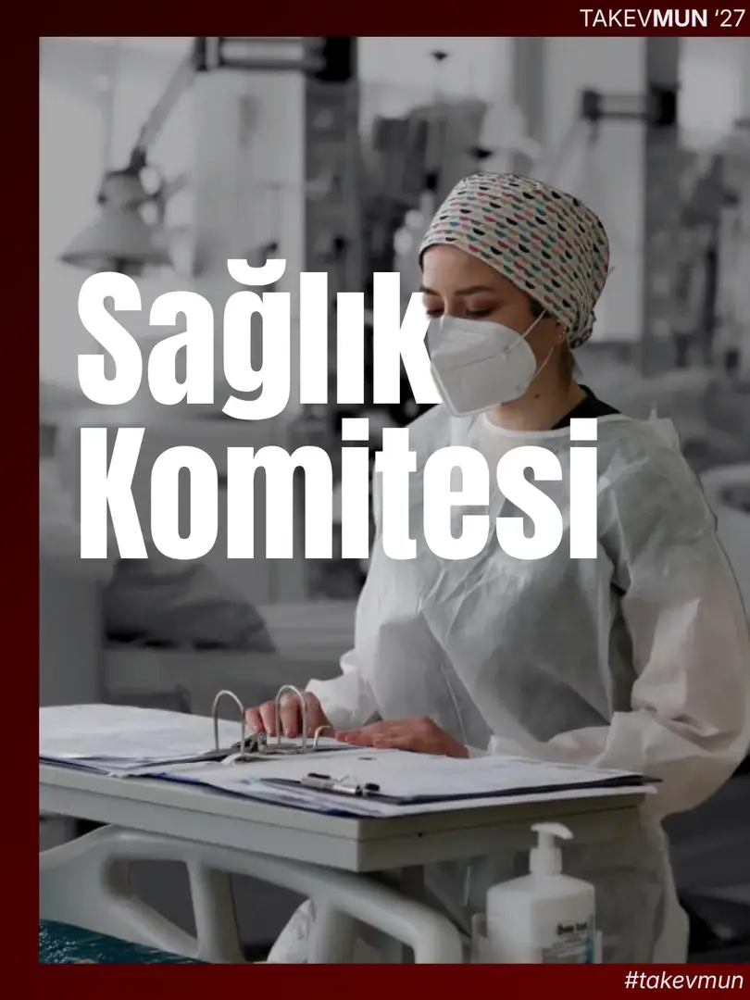
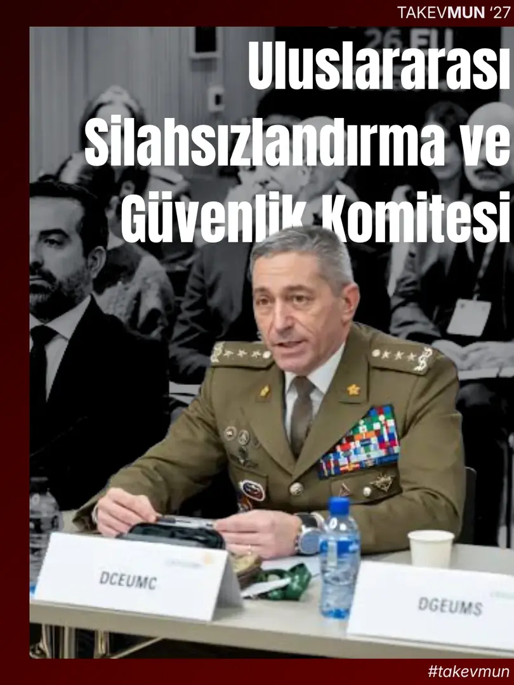
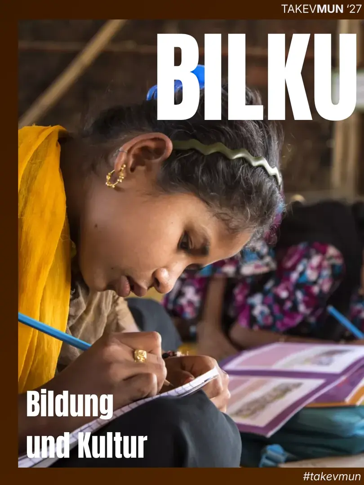
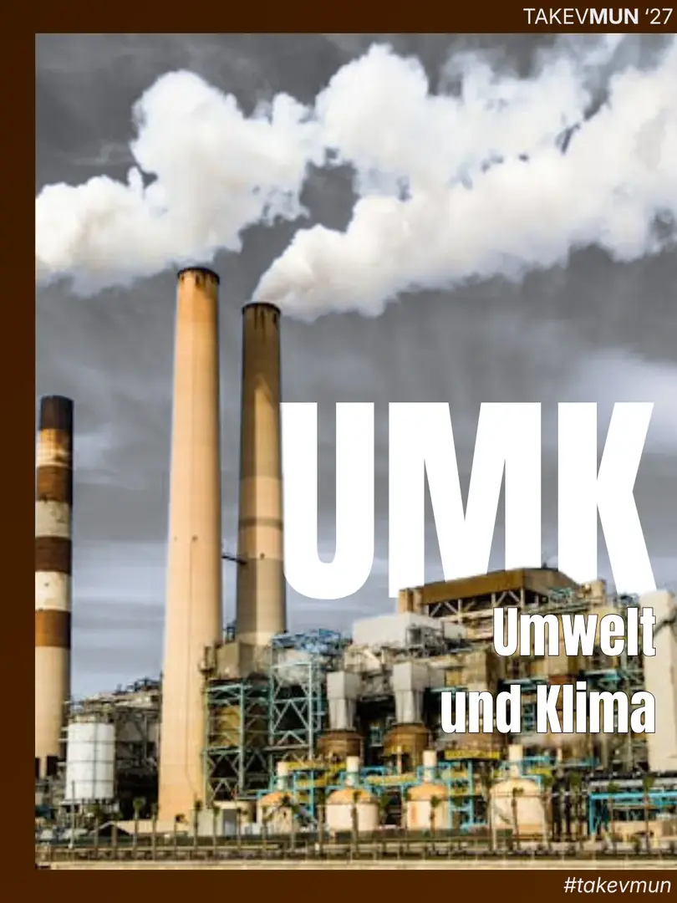
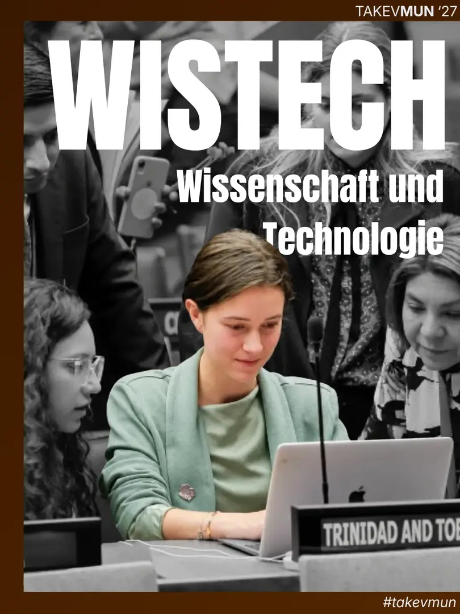

The humanitarian crisis in the West Bank Region is in a bleak state. No matter the amount of humanitarian aid raised, civilians of the West Bank have little to no means of reaching it because of the countless blockades. The limited resources in the region have long since been exhausted and individuals have now found themselves reliant on unorthodox methods of survival. The Office of the Coordination of Humanitarian Affairs (OCHA) has gathered its main actors not only to discuss international aid, but also the logistics of its immediate and continuous distribution.

The global advancement of women’s rights is, on paper, at its pinnacle; yet many women in underdeveloped states cannot exercise their rights or see a change in practice. Crimes directed towards women in these states are continuing to rise despite the many efforts of international institutions. The UNWOMEN Committee has gathered to discuss the expansion of women’s practical judicial freedoms and the preemptive prevention of gender-based crimes.

Since its founding, the People’s Republic of China has been implementing a ‘one nation, one culture’ policy, virtually attempting to erase the ethnic and cultural diversity of its lands. Although many minorities have cut ties with their heritage in order to escape oppression, the ethnic Uyghurs of Western China have remained persistent in their efforts of cultural freedom throughout decades. The Chinese Communist Party has growing concerns that this persistence may spark riots amongst the culturally oppressed subgroups of China and is adamant in cleansing the nation of the threat of revolution. The JCC Committee will consist of CCP officials in favor of making the PRC a monocultural nation, Uyghur figures advocating for the freedom of minorities and international actors looking to balance global powers and human rights.

Dijital ekonomi yeni mesleklerin kapısını açarken bazılarını geride bırakıyor. Peki, bu dönüşümün yarattığı fırsatlardan herkes eşit ölçüde yararlanabiliyor mu? Ekonomi ve Sosyal Komitesinde istihdamın geleceğini, küresel eşitsizlikleri ve sosyal refahı gündeme taşıyoruz. Delegelerimizi, ekonomik gelişmenin toplumun her kesimine ulaşmasını sağlayacak politikalar üretmeye davet ediyoruz.

Bir hastalığı henüz ortaya çıkmadan önlemek, bir yaşamı organ nakliyle kurtarmak… Tıbbın sunduğu olanaklar geliştikçe alınması gereken kararlar da zorlaşıyor. Sağlık Komitesi’nin gündeminde, insan genetiğini değiştirme teknolojilerinin tedaviden tasarım bebeklere uzanan etik sınırları var. Yasa dışı organ ticaretiyle mücadele ve 3 boyutlu yazıcılarla üretilen organların tıbba entegrasyonu da delegelerin ele alacağı konular arasında. Tartışmaların merkezinde ise insan yaşamı, hakları ve onuru yer alıyor.

Güvenliği sağlamak, teknolojinin hızına yetişebilen bir diplomasi gerektiriyor. Bu komitede delegeler, yapay zekâ destekli silah sistemlerinin uluslararası güvenliğe etkilerini tartışmak ve devletler arası siber saldırılara karşı ortak mücadele yolları geliştirmek üzere bir araya geliyor. Farklı ulusal çıkarların karşı karşıya geldiği bu masada hedef, uluslararası iş birliğini güçlendirecek ortak kararlar almak.

Das Komitee für Bildung und Kultur (BILKU) widmet sich der weltweiten Förderung von Bildungsgerechtigkeit, dem Schutz des kulturellen Erbes und der internationalen kulturellen Zusammenarbeit. Delegierte diskutieren über Strategien zur Bekämpfung von Bildungsungleichheit, den Zugang zu inklusivem Lernen in Krisenregionen sowie den Erhalt bedrohter Kulturgüter im Einklang mit den Nachhaltigkeitszielen der Vereinten Nationen. Zudem erarbeiten die Mitgliedstaaten nachhaltige Ansätze zur Bewahrung immaterieller Traditionen und zur Förderung des interkulturellen Dialogs in einer globalisierten Welt.

Das Komitee für Umwelt und Klima (UMK) behandelt globale ökologische Krisen, den Klimawandel und nachhaltige Entwicklung. Im Fokus stehen verbindliche Vereinbarungen zur Reduzierung von Treibhausgasen, der Schutz von Biodiversität, die Bekämpfung der Meeresverschmutzung und die Unterstützung vulnerabler Staaten bei der Anpassung an den Klimawandel durch internationale grüne Finanzierung. Ergänzend erörtern die Delegierten Maßnahmen zur Förderung erneuerbarer Energien sowie Strategien zur Stärkung der Umweltresilienz auf lokaler und globaler Ebene.

Das Komitee für Wissenschaft und Technologie (WISTECH) befasst sich mit den Chancen und Herausforderungen des technologischen Fortschritts, der Digitalisierung und der internationalen Forschungszusammenarbeit. Die Delegierten erarbeiten Richtlinien zu ethischen Aspekten künstlicher Intelligenz, Cybersicherheit, Technologietransfer in Entwicklungsländer und der Nutzung von Innovationen zur Bewältigung globaler Zukunftsaufgaben. Hierbei steht insbesondere die Gewährleistung eines gerechten Zugangs zu modernen Technologien und der Schutz digitaler Grundrechte im Mittelpunkt der Beratungen.